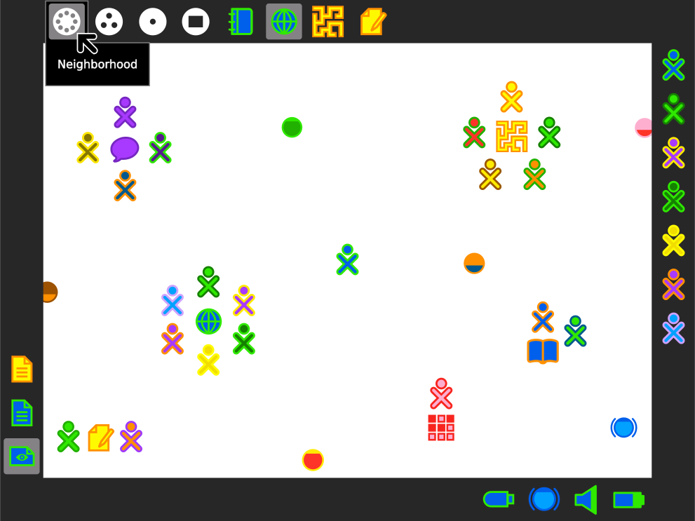
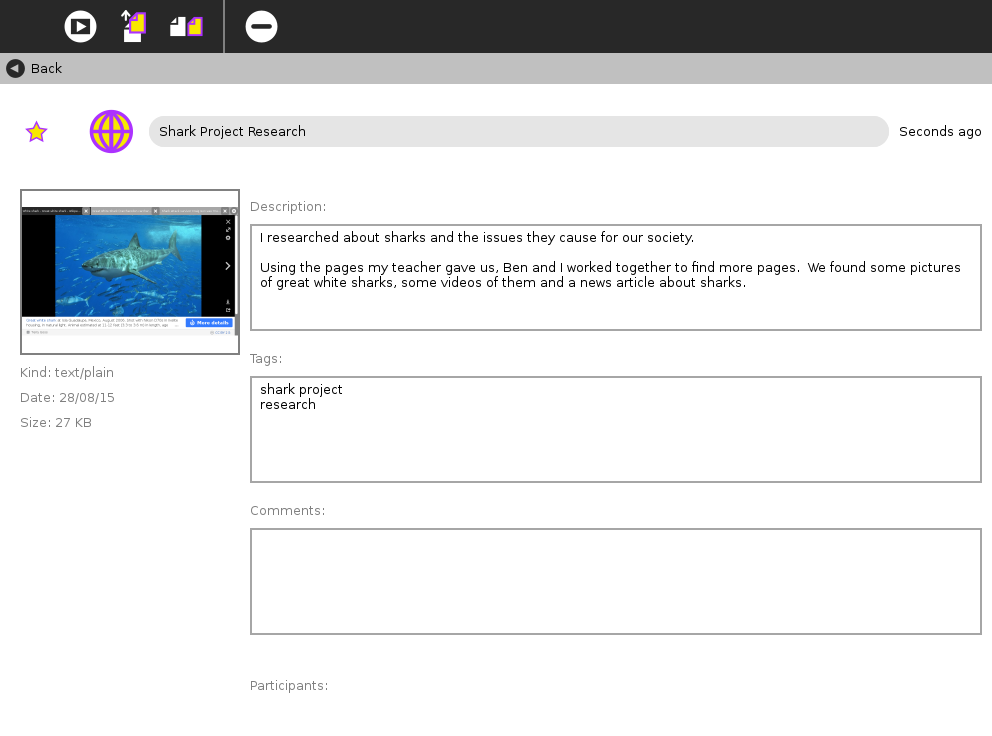

Learning software for children
At Sugar Labs, we make a collection of tools that learners use to explore, discover, create, and reflect. We are non-profit and led by volunteers. We distribute these tools freely and encourage our users to appropriate them, taking ownership and responsibility for their learning.
Sugar is both a desktop and a collection of Activities. Activities, as the name implies, are Apps that involve active engagement from the learner. Activities automatically save results to a journal, where reflections are recorded. Activity instances can be shared between learners; many support real-time collaboration.
 The Sugar Journal records everything a learner does using Sugar. There is no need to remember to click a Save Button. The focus is on the activity, not the computer. The Journal is also a place for reflection, where learners and their teachers can monitor progress.
Below is a small selection from the hundreds of Activities available in the Sugar Activity Library:
Sugar on a Stick – The full Sugar environment – on any computer at any time – from a thumb drive. Learn about how to create a Sugar Stick.
Sugar on a Stick requires a thumb drive with at least 2GB storage and downloading ~650MB. Sugar on a Stick is available for free and does not permanently affect your computer.
GNU/Linux Install – The full Sugar environment – installed on a GNU/Linux computer.
Sugar is available as a desktop environment on GNU/Linux. Up to date packages are available for Fedora, Debian, Ubuntu and many other distros.
Sugar Runs Best on Computers.
Come back to www.sugarlabs.org on a computer to find how to get the full Sugar environment.
Sugarizer (alpha) – A taste of Sugar within your browser.
Sugarizer provides basic Sugar features and some Activities. Sugarizer works in any modern browser, on mobile, tablet or desktop.
Sugar Labs, a volunteer-driven, non-profit organization, had its origins in the One Laptop Per Child project and is now a member project of the Software Freedom Conservancy. The mission of Sugar Labs is to support the Sugar community of users and developers and establish regional, autonomous “Sugar Labs” around the world to help learners “learn how to learn” by tailoring Sugar to local languages and curricula.
Read more about Sugar Lab's culture and pedagogy.
Sugar Labs is an organization built around engaging people. We strive to create software that works well for teachers and students - something that can only happen with your engagement.
Join us on Social Help or on our "It's An Education Project" mailing list. Don't feel shy to raise concerns and bring feedback to the table.